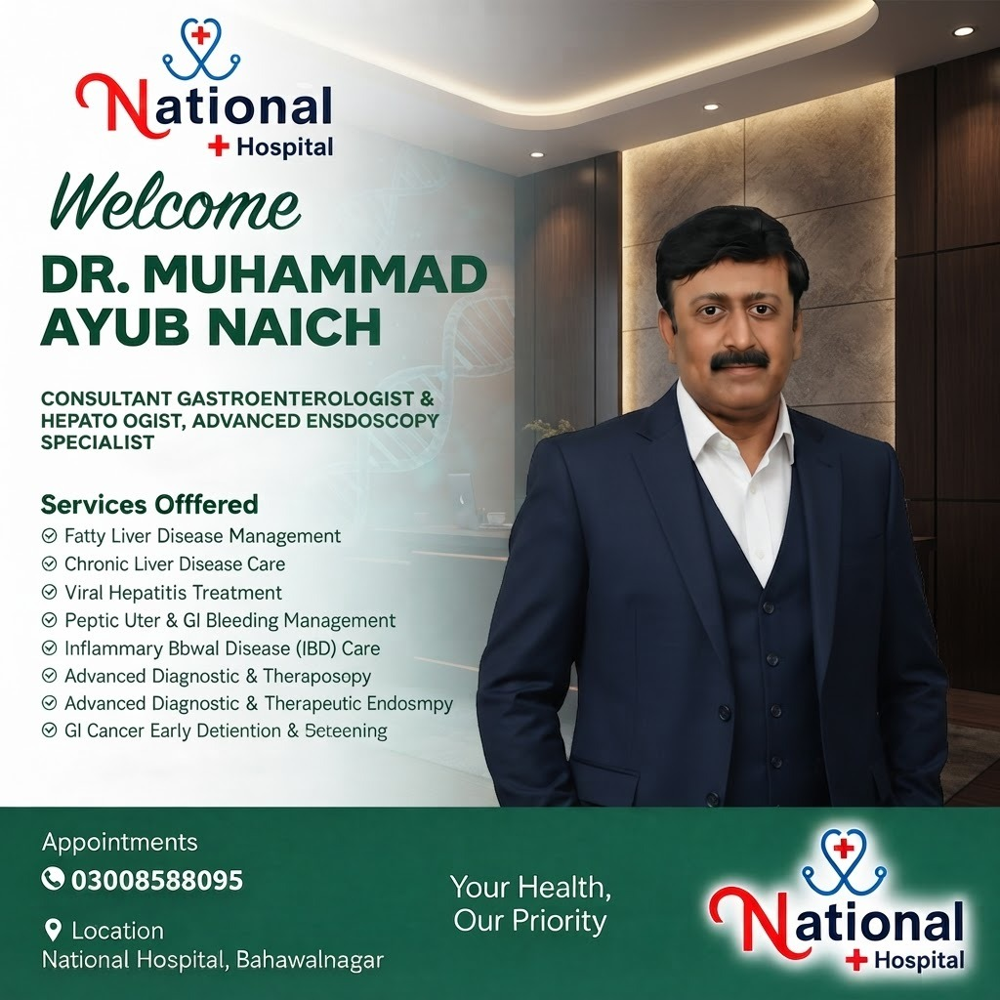
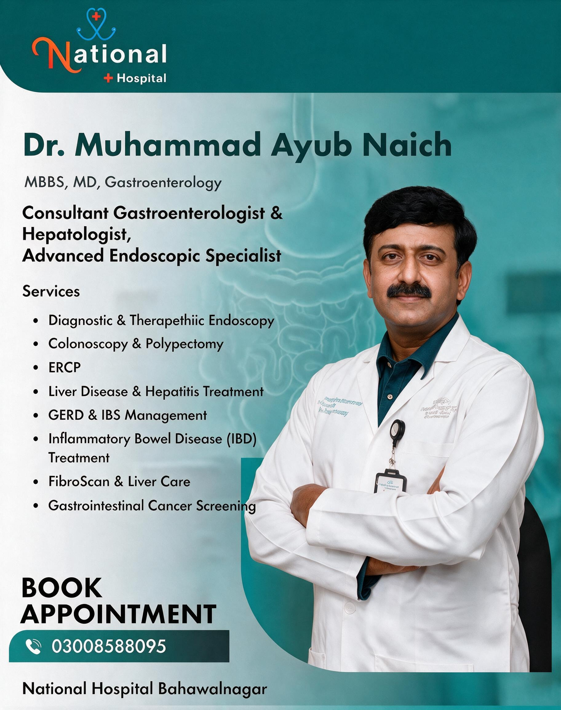

Diagnostic & Therapeutic Endoscopy
Advanced upper GI endoscopy for accurate diagnosis and treatment of stomach and esophageal conditions, including ulcers, bleeding, and strictures.

Consult Dr. Muhammad Ayub Naich
MBBS, MD (Gastroenterology)
Consultant Gastroenterologist & Hepatologist | Advanced Endoscopic Specialist
Expert Digestive & Liver Care You Can Trust.
About
Dr. Muhammad Ayub Naich is a highly experienced Consultant Gastroenterologist and Hepatologist (MBBS, MD - Gastroenterology) practicing at National Hospital, Bahawalnagar. As an advanced endoscopic specialist, he provides expert diagnosis and treatment for the full range of digestive system, liver, and gastrointestinal disorders.
With specialized training in therapeutic endoscopy, colonoscopy, ERCP, and liver disease management, Dr. Naich is committed to delivering precise, minimally invasive care for patients suffering from stomach, intestinal, and liver conditions — helping them achieve faster diagnosis, effective treatment, and long-term digestive health.
Featured
Full campaign posters — shown complete, nothing cropped.


Services
Advanced upper GI endoscopy for accurate diagnosis and treatment of stomach and esophageal conditions, including ulcers, bleeding, and strictures.
Complete colon examination for detecting and removing polyps, screening for colorectal cancer, and diagnosing bowel disorders.
Specialized procedure for diagnosing and treating conditions of the bile ducts, pancreas, and gallbladder, including stone removal and stent placement.
Comprehensive management of Hepatitis B & C, fatty liver disease, cirrhosis, and other chronic liver conditions.
Effective diagnosis and treatment for Acid Reflux (GERD), Irritable Bowel Syndrome (IBS), and other functional digestive disorders.
Specialized care for Crohn's Disease and Ulcerative Colitis, including medical management and long-term monitoring.
Non-invasive liver fibrosis and fatty liver assessment using FibroScan technology, paired with personalized liver care plans.
Early detection screening for esophageal, stomach, colorectal, and liver cancers through advanced endoscopic evaluation.
Why Choose
MD in Gastroenterology with advanced training in endoscopic procedures and liver disease management.
Access to modern endoscopy, colonoscopy, ERCP, and FibroScan equipment for precise diagnosis.
From hepatitis to IBD to GI cancer screening — complete care under one specialist.
Advanced endoscopic techniques that reduce recovery time and procedural risk.
Backed by National Hospital Bahawalnagar's modern infrastructure and diagnostic support.
Strong emphasis on GI cancer screening and early diagnosis for better treatment outcomes.
Clear explanation of diagnosis, procedures, and treatment plans for every patient.
FAQs
Dr. Naich treats digestive and liver conditions including acid reflux, IBS, IBD, hepatitis, fatty liver, gallstones, ulcers, and GI cancers, along with performing diagnostic procedures like endoscopy, colonoscopy, and ERCP.
An endoscopy is a procedure using a thin, flexible camera to examine the esophagus, stomach, and upper digestive tract. It's used to diagnose issues like ulcers, acid reflux, bleeding, or unexplained abdominal pain.
Colonoscopy is typically performed under sedation, making the procedure comfortable and pain-free for most patients. Dr. Naich will explain the preparation and process during your consultation.
ERCP is used to diagnose and treat problems in the bile ducts and pancreas, such as gallstones, blockages, or narrowing of the ducts, often avoiding the need for more invasive surgery.
Common signs include fatigue, jaundice (yellowing of skin/eyes), abdominal swelling, nausea, or abnormal liver function tests. Dr. Naich can evaluate your symptoms and recommend appropriate testing, including FibroScan.
FibroScan is a non-invasive test that measures liver stiffness and fat content, helping assess liver damage or fatty liver disease without the need for a biopsy. It's recommended for patients with chronic liver conditions or risk factors.
Hepatitis C can often be cured with modern antiviral treatment. Hepatitis B can be effectively managed and controlled with proper medical care. Dr. Naich can guide you through diagnosis and the right treatment plan.
Routine colorectal cancer screening is generally recommended starting at age 45-50, or earlier if you have a family history or symptoms such as rectal bleeding or persistent bowel changes.
GERD (Acid Reflux Disease) involves frequent, persistent acid reflux symptoms like heartburn and regurgitation, unlike occasional stomach upset. If symptoms occur more than twice a week, evaluation is recommended.
Yes, specific preparation instructions (including fasting and, for colonoscopy, bowel prep) will be provided before your procedure to ensure accurate results.
You can call 0300 8588095 or visit National Hospital, Bahawalnagar directly.
Yes, Dr. Naich performs diagnostic and therapeutic endoscopy, colonoscopy, ERCP, and FibroScan assessments at National Hospital, Bahawalnagar.
Don't ignore digestive or liver symptoms. Get expert diagnosis and treatment from Dr. Muhammad Ayub Naich at National Hospital, Bahawalnagar.
National Hospital Bahawalnagar, Punjab, Pakistan
MBBS, MD (Gastroenterology)
Consultant Gastroenterologist & Hepatologist, Advanced Endoscopic Specialist
National Hospital

Obstetrician & Gynecologist — pregnancy care, PCOS, infertility & women's health.
View Full Profile
Orthopedic Surgeon — joint replacement, trauma, spine & sports injury care.
View Full ProfileNeurosurgeon — brain, spine & nerve specialist.
View Full Profile